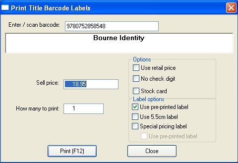

To print Title barcodes with new prices or for damaged barcodes, on the main menu click Reports, then click Print Title Barcodes.
There is also the ability to print barcode labels for items that are on special.
Scan in the titles barcode, or type in the ISBN.

Options to use:
Price - Key in the new price if you wish to change it. (This will change the sell price field in the title master for this product)
How many to print - the quantity to print.
Use Retail Price - check box to set this
No check digit - check box to set this
Stock card - check box to set this
Special pricing label - check box to print labels that show the sell price and the RRP (for sale prices). The Sell price in this window needs to be changed if the same as the RRP. This change will update in the title master. This will print on the label 'Special', 'RRP' and 'Our Price to show the difference in pricing. This is designed for a 55x50mm label.
Use pre-printed label - This option can only be selected if 'Special pricing label' is being used. This additional setting allows you to print the specials onto a label that are already pre-printed e.g. ('Special', 'RRP and 'Our Price' ) Or ( 'Sale', 'Was' and 'Now').
Click the Print(F12) button to print. Or press the F12 on your keyboard.
Once sent to print, the window will clear, ready for the next product to be scanned/keyed
When finished, click the Close